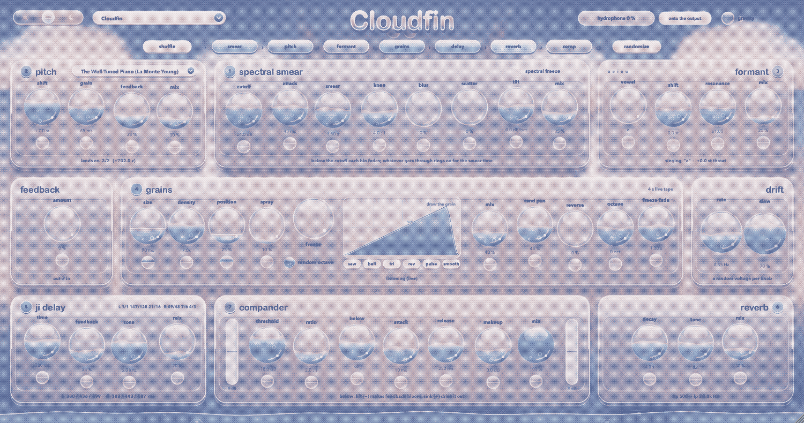
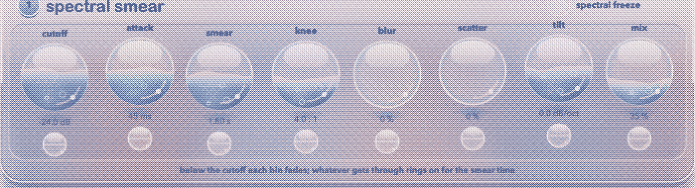
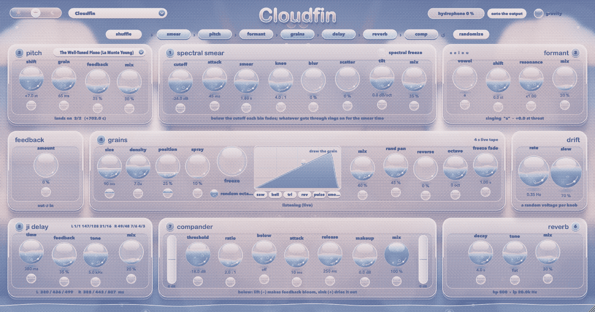
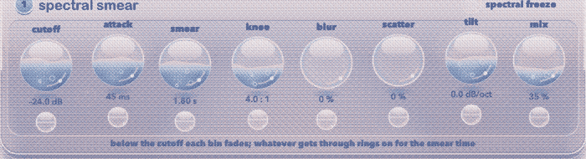
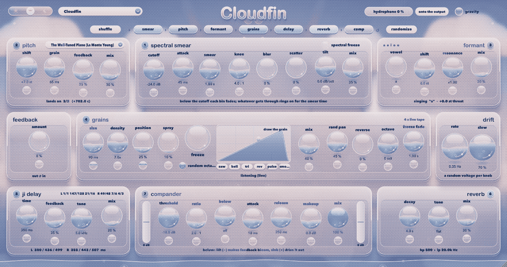
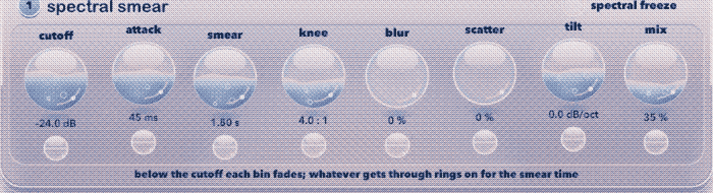
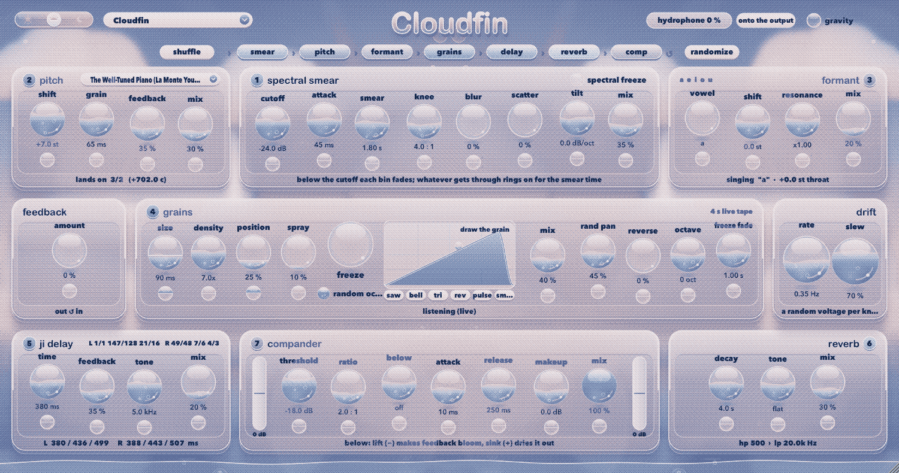
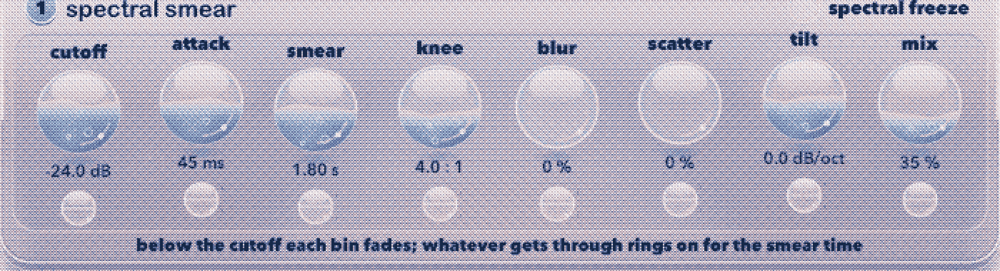
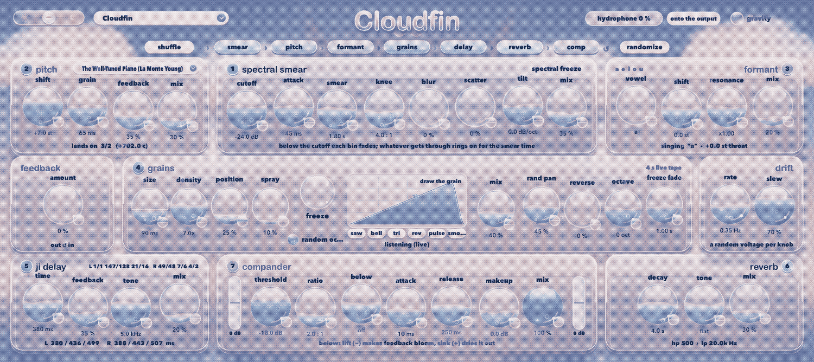
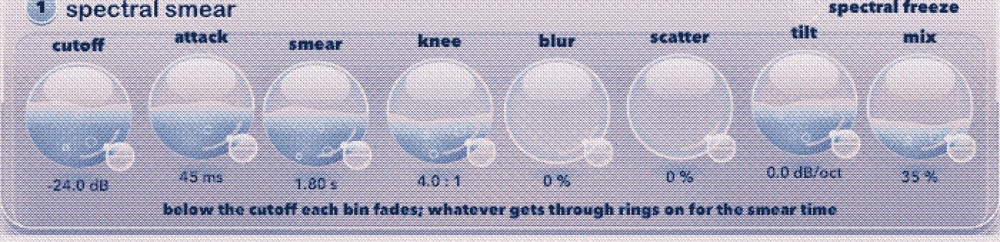

These are the plug-in itself, rendered with each setting (not drawings), with the same dither you liked. Under each window is a close-up of the spectral smear panel at double size. Look at the smallest type: the values under the knobs and the line along the bottom of each panel.
The small values are drawn thin and part-transparent, so the dither breaks them up.


Every label 20 % larger and set in a heavier weight; still dithered with everything else. Good at: the smallest change. Costs: the dither still eats into the letters a little.


As A, and the type is kept out of the dither: it is drawn in one solid colour at full strength, and only the pictures behind it are dithered. Good at: small type reads cleanly while the look stays the same. Costs: none I can see; a few long labels are cut short ("random octa...", "smo...") and would be given more room.


The same solid type, 40 % larger. Good at: readable from across the room. Costs: labels start to crowd the bubbles and each other, and more of the long ones are cut short; the bubbles get a little smaller to make room.


Each knob's small drift bubble moves from underneath it into its bottom corner, the panels lose that row and the gaps between rows close up. The window comes out about 15 % shorter (1500 x 668 instead of 1500 x 790), so at the same height on your screen everything is that much larger. Good at: big type and nothing wasted. Costs: the drift bubbles overlap the corner of each knob and are smaller targets; the strip of open water along the bottom goes.


In this render the window is cut at the new bottom edge; the real build would make the window that shape.